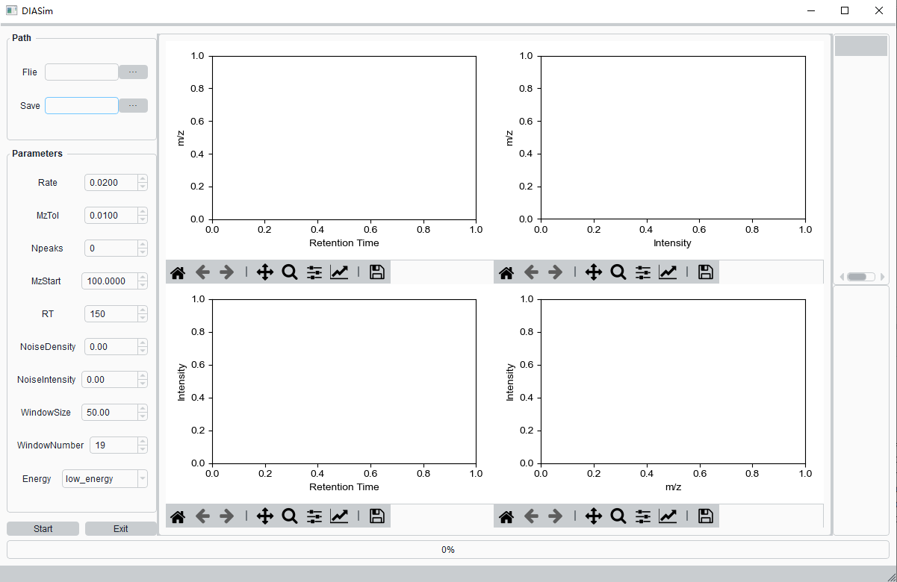

Usage¶
DIASim usage example¶
DIASim provides a friendly user interface, and its initial interface is shown in the figure. The interface of DIASim can be divided into three areas, parameters setting area, drawing area and detailed information area. The detailed parameters of the simulation can be set in the parameter setting area. When the simulation is completed, the simulation results will be displayed in the drawing area. If you want to view the details of MS/MS, you can view it in the detailed information area. Below we will show a concrete example of using DIASim.
First set the parameters of the simulation in the parameter setting area. The specific parameters are as follows.
Files: E:/DIA/simlator_data.xlsxSave: E:/DIA/sim.mzMLRate: 0.02MzTol: 0.01Npeaks: 3MzStart: 100RT: 150NoiseDensity: 0.1NoiseIntensity: 0.1IsolationWindowSize: 50IsolationWindowNumber: 19Energy: low_energyStart the simulation immediately after setting the parameters. A progress bar will show the progress of the simulation.

After the simulation is completed, the results of the simulation will be displayed in the drawing area. The drawing area is divided into four blocks. The four blocks show the results of the simulation from multiple perspectives.
The first block shows the relationship between the retention time and m/z of MS1. The ion intensity is distinguished by the color of the heat map. We can clearly see the distribution of ms1 from this figure. The second block shows the intensity distribution of MS1 under different m/z channels. This picture can clearly see which channels of MS1 have high intensity or low intensity. The third block shows the total ion chromatogram(TIC) of MS1. From this figure, the peak shape, noise level, and whether there are overlapping peaks of MS1 can be clearly seen. The fourth block shows the selected mass spectrum.
After the simulation is completed, each mass spectrum including MS1 and MS2 will be displayed in the detailed information area in the form of a tree. If you want to view the specific information of a certain mass spectrum, you can click it. Then, its mass spectrum will be displayed in the fourth block of drawing area, and its detailed information will be displayed in the detailed information area.
{kind=link}